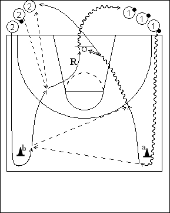

Catégorie : PASSES (Pas-008)
Déroulement
- Deux files de joueurs aux extrémités d’une baseline. Les ballons sont dans la file 1. Le deuxième joueur de la file 2 a également un ballon.
- Les premiers joueurs des deux files partent au premier dribble du premier joueur de la file 1. Celui-ci contourne le cône a et le premier joueur de la file 2 passe derrière le cône b. Le premier joueur passe alors le ballon au premier joueur de la file 2, qui lui remet aussitôt pour un lay-up. Le premier joueur de la file 2 reçoit ensuite le ballon du deuxième joueur de la file 2; il passe alors ce ballon au troisième joueur de la file 2.
- Après son lay-up, 1 va dans la file 2. Après sa passe au troisième joueur de la file 2, le premier 2 effectue le rebond du lay-up de 1 et va en dribble dans la file 1.
Coaching points
- Le timing est très important dans ce drill; dès que la premier ballon a été rendu au joueur 1, le joueur 2 doit aussitôt être attentif à la réception et la remise du deuxième ballon.
- Sauf lors des dribbles, les ballons ne doivent jamais toucher le sol (rapidité pour effectuer le rebond!).